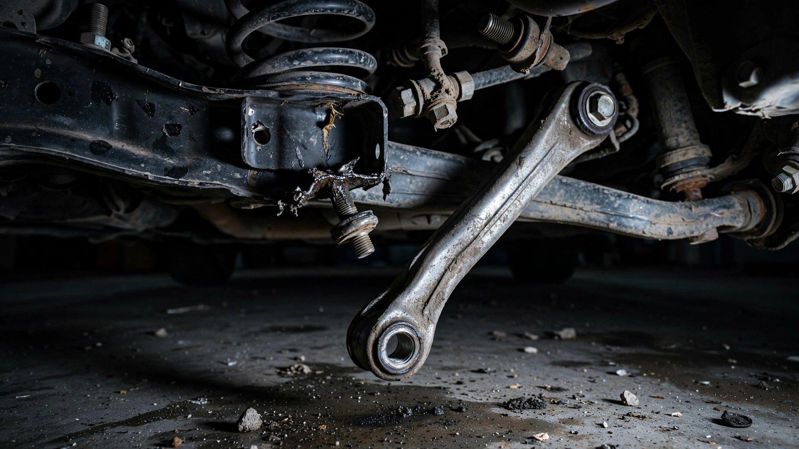

Tesla Recalled 3,222 Cars for a Detaching Suspension Link. NHTSA Is Now Investigating 1.2 Million.

A single bolt pattern on a single suspension component has now triggered three separate federal actions across five years, each one exponentially larger than the last. On Friday, NHTSA opened a preliminary investigation into 1.2 million Tesla Model 3 and Model Y vehicles over reports that the front lower lateral link is detaching from the subframe—causing sudden, complete loss of steering control with no advance warning.[1]
This is the third time the same part has drawn federal attention. In 2021, Tesla recalled 2,800 Model 3 and Model Y vehicles after its own quality engineers escalated 39 service repairs where the lateral link fasteners were loose or missing, all traceable to an assembly torque error.[2] In 2023, another 422 Model 3s joined the list for the same component and the same failure mode, with Tesla reporting 25 warranty claims and zero crashes.[3]
Then the story changed. NHTSA’s Office of Defects Investigation now has 156 complaints alleging the link simply detached, and the agency says these failures “extend beyond the scope” of both prior recalls and “do not appear to be related to the production issue” that prompted them.[1] That is a significant distinction. The 2021 recall was a manufacturing oops: an operator double-torqued a bolt and accidentally loosened it. What NHTSA is investigating now could be a design problem with the component itself.
The affected vehicles are 2018–2020 Model 3 and 2021–2023 Model Y. Most complaints describe no warning before failure, though some owners reported clunking noises beforehand, and the car becomes undriveable once the link lets go. NHTSA has identified zero crashes, injuries, or fatalities so far.
Context makes this weirder, because FARS data from 2014 to 2023 puts the Model 3’s fatality rate at 0.05 per 100 million vehicle miles traveled, and the Model Y at 0.03.[4] Those are the lowest rates in a dataset of 337 models. The vehicles NHTSA is investigating for sudden steering loss are, by every available mortality metric, the safest passenger cars in America. The front lower lateral link hasn’t killed anyone yet, and 156 complaints across 1.2 million vehicles is a 0.013% rate; many preliminary evaluations close without a recall. Whether that holds through the investigation’s full scope is the open question.
Reuters reported in 2023 that Tesla had internally tracked chronic failures of suspension and steering components for years while “frequently blaming the damage on driver abuse in communications with customers and U.S. regulators.”[5] The two prior recalls covered 3,222 total vehicles and were framed as isolated assembly errors. NHTSA’s investigation now covers a population 373 times larger and explicitly rejects the assembly-error explanation.
A lateral link is not an exotic component; it locates the wheel on the subframe, and when it detaches, the wheel is no longer where the steering system expects it to be. At highway speed, that is not a “pull over and call service” scenario. It is a “the car is now going wherever physics takes it” scenario. Tesla’s extraordinary safety record makes the stakes paradoxical: the very fleet that produces the fewest bodies per mile could be harboring a structural defect capable of producing them in the most violent way.
What to do if you own one: Check your VIN at nhtsa.gov/recalls. The investigation covers 2018–2020 Model 3 and 2021–2023 Model Y. If you hear clunking or unusual noises from the front suspension, do not ignore them. Schedule a service appointment through the Tesla app immediately. No recall has been issued yet, but 156 owners already found out the hard way that the link can let go without warning.
Sources & References
- Reuters, “US auto safety regulator probes 1.2 million Tesla vehicles over suspension failures,” July 31, 2026. reuters.com
- NHTSA Recall SB-21-31-003, “Front Suspension Lateral Link,” December 2021. Tesla Model 3 (2019–2021) and Model Y (2020–2021), 2,791 vehicles. tesla.oemdtc.com
- Reuters, “Tesla recalls 422 U.S. vehicles over suspension part,” April 7, 2023. reuters.com
- NHTSA, Fatality Analysis Reporting System (FARS), 2014–2023. nhtsa.gov
- Reuters investigative report on Tesla suspension and steering component failures, 2023. reuters.com (cited in July 31, 2026 article).
Source: NHTSA FARS 2014–2023 for fatality rates. NHTSA preliminary evaluation announcement July 31, 2026 for investigation scope. Prior recall data from NHTSA campaign records. Fatality rate estimates use VMT calculations with ±15% uncertainty for fleet size. See methodology for caveats.